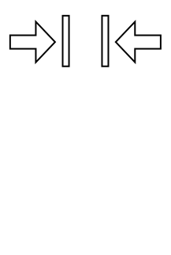
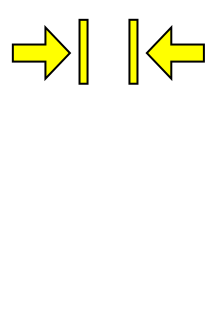
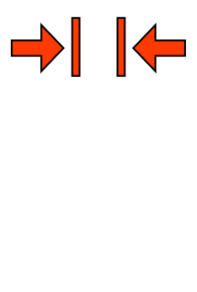
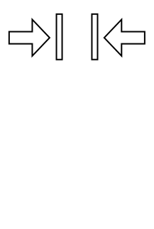
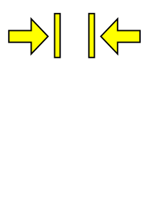
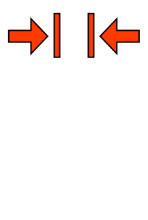

34
29.2
34.6
09


 







Should never be seen.
Should never be seen.
Paused!
Diving is easy. Prove it by collecting treasure!
All you have to do is swim over the treasure chests, then return to the dive boat without damaging yourself or the marine environment.
| Breathe in | Up |
| Breathe out | Down |
| Swim left | Left |
| Swim right | Right |
| Inflate BCD | [ |
| Deflate BCD | ] |
| Equalize ears | Enter |
| Pause | P |
You can't equalize if your ears are in pain: ascend instead. You also can't breathe while equalizing.
Beware of lung expansion injuries on ascent. Friends don't let friends touch the coral. Ascend a little if you're running out of no-decompression time.
Have fun, but don't forget to breathe!
Disclaimer: It probably goes without saying but this is not a dive computer / planner. The models are not accurate enough. Do not use this to plan dives!